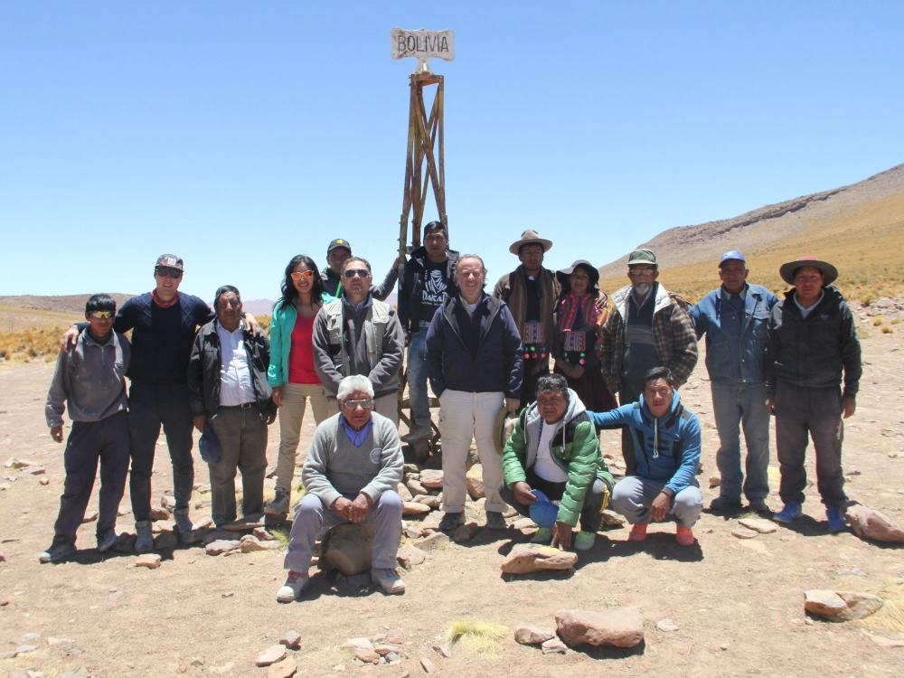

Descripción del proyecto
Se diseñaron experiencias de turismo indígena en comunidades del Salar de Uyuni y la Amazonía boliviana, mediante un proceso participativo que integró talleres, cocreación colectiva y relevamientos territoriales para estructurar propuestas basadas en las potencialidades locales. Como resultados, se formuló una estrategia para el desarrollo sostenible de la oferta turística nacional y el fortalecimiento institucional; se elaboró una Guía Metodológica para el Diseño de Experiencias Turísticas Innovadoras; se desarrolló un catálogo de experiencias en áreas piloto; y se definió un programa de atracción de inversiones. En conjunto, estos productos contribuyen a diversificar la oferta, mejorar la competitividad del destino y dinamizar las economías locales.
← Volver al portfolio